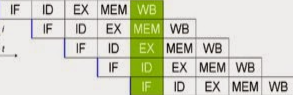
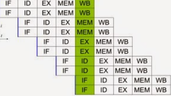

Paralelismo a nivel de bit:
Desde el advenimiento de la integración a gran escala (VLSI) como tecnología de fabricación de chips de computadora en la
década de 1970 hasta alrededor de 1986, la aceleración en la arquitectura de computadores se lograba en gran medida duplicando
el tamaño de la palabra en la computadora, la cantidad de información que el procesador puede manejar por ciclo.
Paralelismo a nivel de instrucción:
Un programa de ordenador es, en esencia, una secuencia de instrucciones ejecutadas por un procesador. Estas instrucciones
pueden reordenarse y combinarse en grupos que luego son ejecutadas en paralelo sin cambiar el resultado del programa. Esto
se conoce como paralelismo a nivel de instrucción. Los avances en el paralelismo a nivel de instrucción dominaron la
arquitectura de computadores desde mediados de 1980 hasta mediados de la década de 1990.
Los procesadores modernos tienen ''pipeline'' de instrucciones de varias etapas. Cada etapa en el pipeline corresponde a
una acción diferente que el procesador realiza en la instrucción correspondiente a la etapa; un procesador con un pipelinede
N etapas puede tener hasta n instrucciones diferentes en diferentes etapas de finalización. El ejemplo canónico de un procesador
segmentado es un procesador RISC, con cinco etapas: pedir instrucción, decodificar, ejecutar, acceso a la memoria y escritura.
El procesador Pentium 4 tenía un pipeline de 35 etapas.

Paralelismo de datos:
El paralelismo de datos es el paralelismo inherente en programas con ciclos, que se centra en la distribución de los datos
entre los diferentes nodos computacionales que deben tratarse en paralelo. La paralelización de ciclos conduce a menudo a
secuencias similares de operaciones —no necesariamente idénticas— o funciones que se realizan en los elementos de una gran
estructura de datos. Muchas de las aplicaciones científicas y de ingeniería muestran paralelismo de datos.
Una dependencia de terminación de ciclo es la dependencia de una iteración de un ciclo en la salida de una o más iteraciones
anteriores. Las dependencias de terminación de ciclo evitan la paralelización de ciclos.

Paralelismo de tareas:
El paralelismo de tareas es la característica de un programa paralelo en la que cálculos completamente diferentes se pueden
realizar en cualquier conjunto igual o diferente de datos. Esto contrasta con el paralelismo de datos, donde se realiza el
mismo cálculo en distintos o mismos grupos de datos. El paralelismo de tareas por lo general no escala con el tamaño de un
problema.